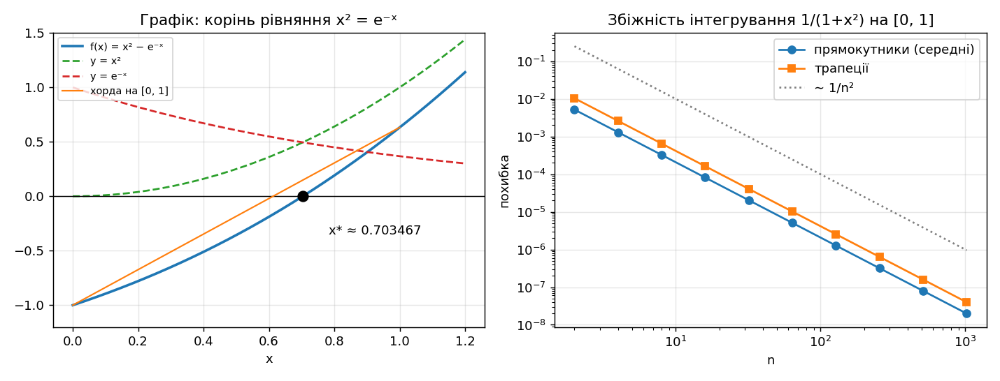
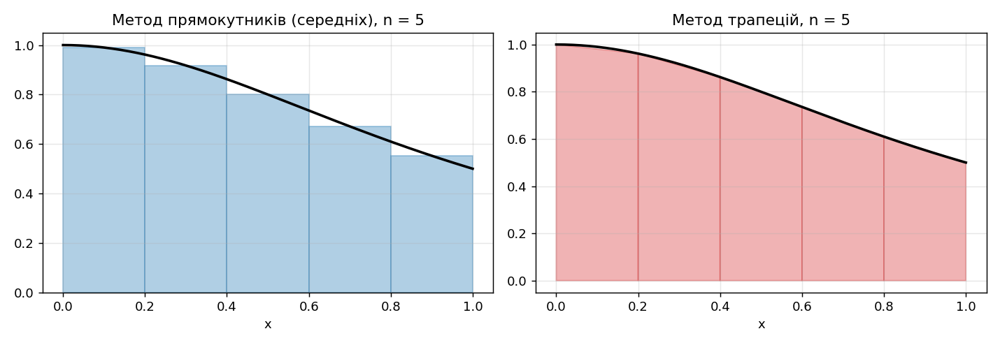
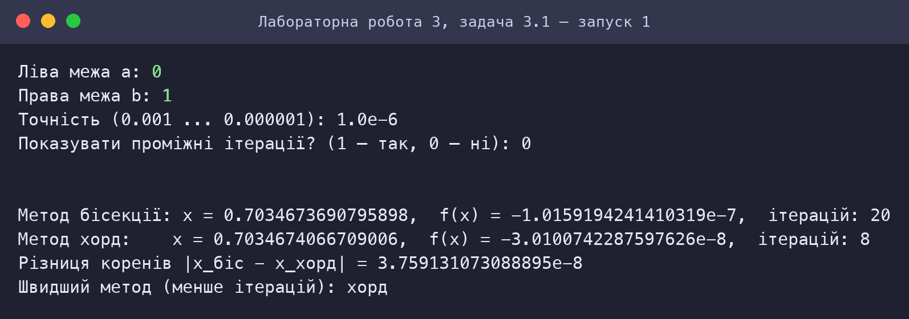
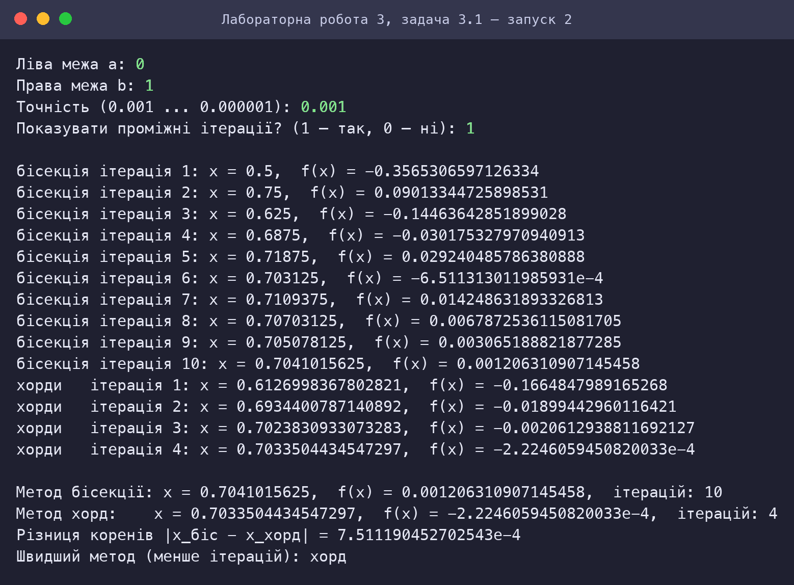
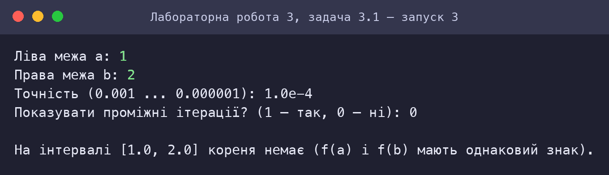
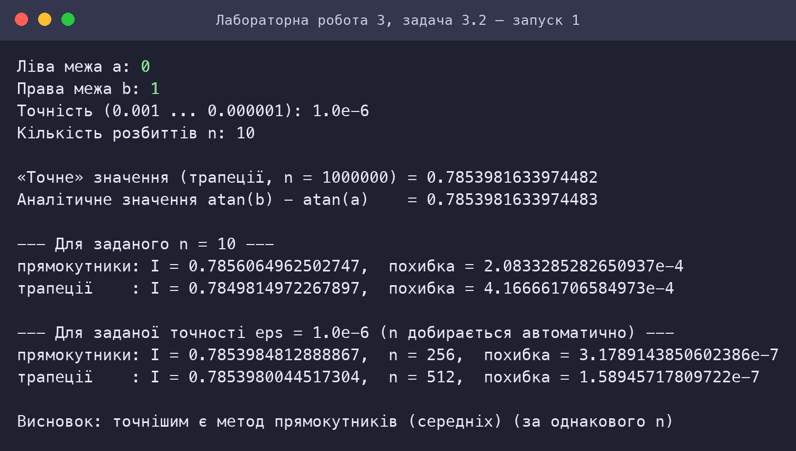
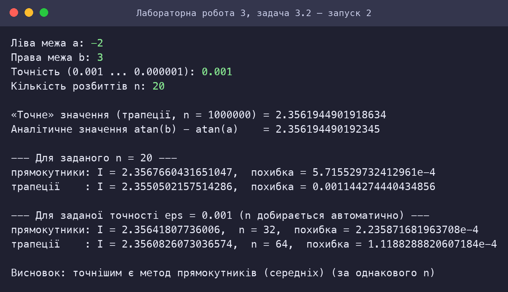

Форми lambda та let, вираз присвоєння set! для розв’язання нелінійних рівнянь та чисельного інтегрування функцій
Варіант 3
Київ — 2026
Мета роботи
Мета подана за методичними вказівками до лабораторних занять з дисципліни «Функціональне програмування» (Київ, 2025).
Умова завдання
Варіант 3. Умова наведена з методичних вказівок.
Задача 3.1
3.1 Написати програму мовою Scheme для пошуку коренів нелінійного рівняння x2 = e−x двома методами: бісекції (bisection) та методом хорд (chord method) на інтервалі [a, b]. Порівняти результати розв’язків двома методами.
Завдання:
- задати значення a, b меж інтервалу з клавіатури;
- задати значення точності розрахунку коренів (10−3 – 10−6);
- реалізувати чисельне розв’язання рівняння методом бісекції;
- реалізувати чисельне розв’язання рівняння методом хорд;
- у випадку відсутності на заданому інтервалі коренів вивести відповідне повідомлення;
- передбачити виведення проміжних ітерацій за вимогою користувача;
- порівняти результати чисельного розв’язання за точністю (наприклад, 10−6) та швидкістю збіжності (кількість ітерацій);
- у звіті намалювати графік функції з відображенням кореня рівняння.
Задача 3.2
3.2 Написати програму мовою Scheme для обчислення визначеного інтегралу функції f(x) = 1/(1 + x2) на відрізку [a, b] двома методами: методом прямокутників і методом трапецій. Порівняти результати обчислення.
Завдання:
- задати значення a, b меж відрізку з клавіатури; задати значення точності інтегрування (10−3 – 10−6); задати значення n кількості розбиття відрізку [a, b];
- реалізувати чисельне інтегрування методом прямокутників і методом трапецій;
- процедури чисельного інтегрування мають приймати в якості аргументів функцію f, межі відрізку a, b, кількість інтервалів розбиття n та повертати значення інтегралу;
- розрахувати «точне» значення інтегралу одним із методів з дуже малим кроком;
- визначити похибку обчислення інтегралу кожним методом як абсолютну різницю між наближеним і «точним» значеннями;
- порівнявши похибки, визначити, який метод більш ефективний (точний).
Аналіз задачі та математичне забезпечення
Задача 3.1: Корінь рівняння x² = e⁻ˣ (бісекція, хорди)
Постановка
Рівняння x² = e−x зводимо до f(x) = x² − e−x = 0. Похідна f′(x) = 2x + e−x > 0 при x ≥ 0 — функція зростає; f(0) = −1 < 0, f(1) = 1 − e−1 ≈ 0,632 > 0, тому на [0; 1] існує єдиний корінь x* ≈ 0,703467. Друга похідна f″(x) = 2 − e−x > 0 — функція опукла на [0; 1].

Метод бісекції
Середина c = (a + b)/2; якщо f(a)·f(c) > 0, корінь у [c; b], інакше — у [a; c]. Після k кроків довжина інтервалу (b − a)/2k, тому для досягнення точності ε потрібно k ≥ log₂((b − a)/ε) ітерацій (для [0; 1] і ε = 10−6 маємо k = 20 — збігається з експериментом). Збіжність лінійна зі знаменником 1/2, не залежить від виду функції.
Метод хорд
Через точки (a, f(a)) і (b, f(b)) проводиться хорда, що перетинає вісь x у c = a − f(a)·(b − a)/(f(b) − f(a)). Той кінець, де знак f збігається зі знаком f(c), замінюється на c (метод хибного положення, зберігає перекриття кореня). Для опуклої функції один кінець залишається фіксованим (тут b = 1), збіжність лінійна, але з малим знаменником → суттєво швидше за бісекцію: 8 ітерацій проти 20 для ε = 10−6. Критерій зупинки: |ck − ck−1| < ε.
Відсутність кореня й проміжні ітерації
Якщо f(a) і f(b) мають однаковий знак (same-sign?), виводиться повідомлення «кореня немає». Параметр show? вмикає друк кожної ітерації (номер, x, f(x)).
| Інтервал, ε | Бісекція: корінь (ітерацій) | Хорди: корінь (ітерацій) | Еталон |
|---|---|---|---|
| [0, 1], eps=0.001 | біс.=0.70410156 (10 ітер.), хорди=0.70335044 (4 ітер.) | 0.70346742 | |
| [0, 1], eps=0.0001 | біс.=0.70343018 (14 ітер.), хорди=0.70346606 (6 ітер.) | 0.70346742 | |
| [0, 1], eps=1e-05 | біс.=0.70346832 (17 ітер.), хорди=0.70346728 (7 ітер.) | 0.70346742 | |
| [0, 1], eps=1e-06 | біс.=0.70346737 (20 ітер.), хорди=0.70346741 (8 ітер.) | 0.70346742 | |
| [0, 2], eps=1e-06 | біс.=0.70346737 (21 ітер.), хорди=0.70346721 (15 ітер.) | 0.70346742 | |
| [0.5, 1], eps=1e-06 | біс.=0.70346737 (19 ітер.), хорди=0.70346739 (7 ітер.) | 0.70346742 | |
| [-1, 1], eps=1e-06 | біс.=0.70346737 (21 ітер.), хорди=0.70346738 (8 ітер.) | 0.70346742 | |
Задача 3.2: Інтеграл 1/(1+x²): прямокутники й трапеції
Формули
Крок h = (b − a)/n. Прямокутники (середніх): I ≈ h·Σ f(a + (i + ½)h), i = 0…n−1. Трапецій: I ≈ h·[(f(a) + f(b))/2 + Σ f(a + ih)], i = 1…n−1. Процедури приймають функцію f, межі a, b та n і повертають значення інтегралу (функція передається як lambda-значення).

Оцінка похибок
Для двічі диференційовної f: похибка середніх прямокутників ≈ −(b − a)h²f″(ξ)/24, трапецій ≈ +(b − a)h²f″(ξ)/12 — обидві О(h²), але у трапецій константа вдвічі більша, а знак протилежний. Тому за однакового n метод середніх прямокутників точніший приблизно вдвічі — це підтверджено: для ∫01 при n = 10 похибка прямокутників 2,08·10−4, трапецій 4,17·10−4.
«Точне» значення
Обчислюється методом трапецій з n = 106 (h = 10−6·(b − a)); для контролю наведено аналітичне значення arctg b − arctg a, збіг до 10−13. (Значення кроку 10−10 з методичних рекомендацій потребувало б 1010 ітерацій; обрано 106 — похибка квадратури ≈ 10−13 достатня для порівняння методів із похибками ≥ 10−7.)
Точність як параметр
Для заданої eps число розбиттів добирається автоматично за правилом Рунге: n подвоюється, доки |I2n − In| ≥ ε. Для [0; 1], ε = 10−6: прямокутники — n = 256, трапеції — n = 512.
HIPO-діаграма (схема виклику процедур)
Діаграма показує ієрархію викликів процедур (стрілка A → B означає, що A викликає B); блоки з рекурсією виділено. Допоміжні процедури введення даних (ask-…) для наочності опущено.
Задача 3.1: Корінь рівняння x² = e⁻ˣ (бісекція, хорди)

| Процедура | Вхід (Input) | Обробка / вихід (Process → Output) |
|---|---|---|
main | a, b, eps, show? | виклик run |
run / compare | a, b, eps, show? | перевірка наявності кореня, запуск двох методів |
bisection | a, b, eps, i, show? | (корінь, ітерацій) методом бісекції |
chord / chord-point | a, b, eps, i, show?, c-prev | (корінь, ітерацій) методом хорд |
f | x | x² − e−x (lambda) |
compare-results | результати двох методів | порівняльна таблиця |
Задача 3.2: Інтеграл 1/(1+x²): прямокутники й трапеції

| Процедура | Вхід (Input) | Обробка / вихід (Process → Output) |
|---|---|---|
main | a, b, eps, n | виклик run |
rectangles / sum-mid | g, a, b, n | інтеграл методом середніх прямокутників |
trapezoids / sum-inner | g, a, b, n | інтеграл методом трапецій |
auto | method, g, a, b, n, eps | (I, n) за правилом Рунге |
exact-value / analytic | g, a, b | «точне» й аналітичне значення |
report / report-values | параметри | похибки та висновок |
Код
Код наведено текстом (не скріншотом). Файли можна завантажити та запустити в Dr.Racket (мова R5RS: Мова → Обрати мову → Other languages → R5RS) або в Guile.
Задача 3.1: Корінь рівняння x² = e⁻ˣ (бісекція, хорди)
⬇ task1_roots.scm;; =====================================================================
;; ЛР3, варіант 3, задача 3.1. Корінь нелінійного рівняння x^2 = e^(-x)
;; на інтервалі [a, b] двома методами: бісекції та хорд.
;; Рівняння зводимо до вигляду f(x) = x^2 - e^(-x) = 0.
;; Використано форми lambda (функція рівняння) і let (локальні прив'язки c, h); ітерації —
;; хвостова рекурсія з параметрами, присвоєння set! не потрібне.
;; =====================================================================
;; ---------- Функція рівняння ----------
(define f (lambda (x) (- (* x x) (exp (- x)))))
;; ---------- Допоміжні ----------
(define (same-sign? u v) (> (* u v) 0))
(define (print-iter label i x fx)
(display label) (display " ітерація ") (display i)
(display ": x = ") (display x)
(display ", f(x) = ") (display fx) (newline))
;; ---------- Метод бісекції (поділу навпіл) ----------
;; Інтервал [a, b], f(a)*f(b) < 0. Середина c = (a+b)/2; залишаємо половину зі зміною знаку.
;; Зупинка: довжина інтервалу (b - a)/2 < eps. Результат — список (корінь кількість-ітерацій).
(define (bisection a b eps i show?)
(let ((c (/ (+ a b) 2)))
(if show? (print-iter "бісекція" i c (f c)))
(cond ((or (= (f c) 0) (< (/ (- b a) 2) eps)) (list c i))
((same-sign? (f a) (f c)) (bisection c b eps (+ i 1) show?))
(else (bisection a c eps (+ i 1) show?)))))
;; ---------- Метод хорд ----------
;; Хорда через точки (a, f(a)) і (b, f(b)) перетинає вісь x у точці
;; c = a - f(a) * (b - a) / (f(b) - f(a)).
;; Новий інтервал — той кінець, де знак f збігається зі знаком f(c), замінюється на c.
;; Зупинка: |c - c_prev| < eps або f(c) = 0.
(define (chord a b eps i show? c-prev)
(let ((c (chord-point a b)))
(if show? (print-iter "хорди " i c (f c)))
(cond ((or (= (f c) 0) (< (abs (- c c-prev)) eps)) (list c i))
((same-sign? (f a) (f c)) (chord c b eps (+ i 1) show? c))
(else (chord a c eps (+ i 1) show? c)))))
(define (chord-point a b)
(- a (/ (* (f a) (- b a)) (- (f b) (f a)))))
;; ---------- Інтерфейс ----------
(define (main)
(display "Ліва межа a: ") (ask-b (exact->inexact (read))))
(define (ask-b a)
(display "Права межа b: ") (ask-eps a (exact->inexact (read))))
(define (ask-eps a b)
(display "Точність (0.001 ... 0.000001): ") (ask-show a b (read)))
(define (ask-show a b eps)
(display "Показувати проміжні ітерації? (1 — так, 0 — ні): ")
(run a b eps (= (read) 1)))
(define (run a b eps show?)
(newline)
(if (same-sign? (f a) (f b))
(begin (display "На інтервалі [") (display a) (display ", ") (display b)
(display "] кореня немає (f(a) і f(b) мають однаковий знак).") (newline))
(compare a b eps show?)))
(define (compare a b eps show?)
(compare-results (bisection a b eps 1 show?) (chord a b eps 1 show? (+ b 1)) eps))
(define (compare-results rb rc eps)
(newline)
(display "Метод бісекції: x = ") (display (car rb))
(display ", f(x) = ") (display (f (car rb)))
(display ", ітерацій: ") (display (cadr rb)) (newline)
(display "Метод хорд: x = ") (display (car rc))
(display ", f(x) = ") (display (f (car rc)))
(display ", ітерацій: ") (display (cadr rc)) (newline)
(display "Різниця коренів |x_біс - x_хорд| = ") (display (abs (- (car rb) (car rc)))) (newline)
(display "Швидший метод (менше ітерацій): ")
(display (cond ((< (cadr rc) (cadr rb)) "хорд")
((< (cadr rb) (cadr rc)) "бісекції")
(else "однаково")))
(newline))
Задача 3.2: Інтеграл 1/(1+x²): прямокутники й трапеції
⬇ task2_integral.scm;; =====================================================================
;; ЛР3, варіант 3, задача 3.2. Визначений інтеграл функції f(x) = 1/(1 + x^2)
;; на відрізку [a, b] методами прямокутників (середніх) та трапецій.
;; Процедури інтегрування отримують функцію f, межі a, b та кількість інтервалів n
;; і повертають значення інтегралу. Підінтегральна функція задана lambda-виразом, крок h та
;; сума оформлені через let; цикли — хвостова рекурсія (set! не потрібне).
;; =====================================================================
;; ---------- Підінтегральна функція ----------
(define f (lambda (x) (/ 1 (+ 1 (* x x)))))
;; ---------- Метод прямокутників (середніх) ----------
;; I ~ h * sum_{i=0}^{n-1} f(a + (i + 1/2)*h), h = (b - a)/n
(define (rectangles g a b n)
(let ((h (/ (- b a) n)))
(* h (sum-mid g a h n 0 0))))
(define (sum-mid g a h n i acc)
(if (= i n)
acc
(sum-mid g a h n (+ i 1) (+ acc (g (+ a (* (+ i 0.5) h)))))))
;; ---------- Метод трапецій ----------
;; I ~ h * ( (f(a) + f(b))/2 + sum_{i=1}^{n-1} f(a + i*h) )
(define (trapezoids g a b n)
(let ((h (/ (- b a) n)))
(* h (+ (/ (+ (g a) (g b)) 2) (sum-inner g a h n 1 0)))))
(define (sum-inner g a h n i acc)
(if (= i n)
acc
(sum-inner g a h n (+ i 1) (+ acc (g (+ a (* i h)))))))
;; ---------- Автоматичний добір n за точністю ----------
;; Подвоюємо n, доки |I_2n - I_n| >= eps (правило Рунге). Результат: (значення n)
(define (auto method g a b n eps)
(if (< (abs (- (method g a b (* 2 n)) (method g a b n))) eps)
(list (method g a b (* 2 n)) (* 2 n))
(auto method g a b (* 2 n) eps)))
;; ---------- «Точне» значення ----------
;; Метод трапецій із дуже малим кроком h = (b-a)/10^6; для контролю — аналітичний результат atan(b) - atan(a).
(define exact-n 1000000)
(define (exact-value g a b) (trapezoids g a b exact-n))
(define (analytic a b) (- (atan b) (atan a)))
;; ---------- Інтерфейс ----------
(define (main)
(display "Ліва межа a: ") (ask-b (exact->inexact (read))))
(define (ask-b a)
(display "Права межа b: ") (ask-eps a (exact->inexact (read))))
(define (ask-eps a b)
(display "Точність (0.001 ... 0.000001): ") (ask-n a b (read)))
(define (ask-n a b eps)
(display "Кількість розбиттів n: ") (run a b eps (read)))
(define (run a b eps n)
(newline)
(report a b eps n (exact-value f a b)))
(define (report a b eps n ex)
(report-values a b eps n ex (rectangles f a b n) (trapezoids f a b n)))
;; r, t — значення інтегралу методами прямокутників і трапецій для заданого n
(define (report-values a b eps n ex r t)
(display "«Точне» значення (трапеції, n = 1000000) = ") (display ex) (newline)
(display "Аналітичне значення atan(b) - atan(a) = ") (display (analytic a b)) (newline)
(newline)
(display "--- Для заданого n = ") (display n) (display " ---") (newline)
(print-method "прямокутники" r ex)
(print-method "трапеції " t ex)
(newline)
(display "--- Для заданої точності eps = ") (display eps) (display " (n добирається автоматично) ---") (newline)
(print-auto "прямокутники" (auto rectangles f a b 1 eps) ex)
(print-auto "трапеції " (auto trapezoids f a b 1 eps) ex)
(newline)
(display "Висновок: точнішим є метод ")
(display (if (< (abs (- r ex)) (abs (- t ex))) "прямокутників (середніх)" "трапецій"))
(display " (за однакового n)") (newline))
(define (print-method name value ex)
(display name) (display ": I = ") (display value)
(display ", похибка = ") (display (abs (- value ex))) (newline))
(define (print-auto name r ex)
(display name) (display ": I = ") (display (car r))
(display ", n = ") (display (cadr r))
(display ", похибка = ") (display (abs (- (car r) ex))) (newline))
Скріншот роботи та результату
Знімки консолі відтворюють роботу програм: запуск виконано в інтерпретаторі Guile 3.0 (R5RS-сумісний); введені користувачем значення виділено зеленим. Для кожного запуску наведено умови та результат.
Задача 3.1: Корінь рівняння x² = e⁻ˣ (бісекція, хорди)



Задача 3.2: Інтеграл 1/(1+x²): прямокутники й трапеції


Графіки
Оцінка достовірності результату
Корінь x² = e⁻ˣ: обидва методи в межах eps від еталону
еталон (200 кроків бісекції): 0.703467422498
| Вхідні дані | Результат програми | Еталон | |
|---|---|---|---|
| [0, 1], eps=0.001 | біс.=0.70410156 (10 ітер.), хорди=0.70335044 (4 ітер.) | 0.70346742 | ✓ |
| [0, 1], eps=0.0001 | біс.=0.70343018 (14 ітер.), хорди=0.70346606 (6 ітер.) | 0.70346742 | ✓ |
| [0, 1], eps=1e-05 | біс.=0.70346832 (17 ітер.), хорди=0.70346728 (7 ітер.) | 0.70346742 | ✓ |
| [0, 1], eps=1e-06 | біс.=0.70346737 (20 ітер.), хорди=0.70346741 (8 ітер.) | 0.70346742 | ✓ |
| [0, 2], eps=1e-06 | біс.=0.70346737 (21 ітер.), хорди=0.70346721 (15 ітер.) | 0.70346742 | ✓ |
| [0.5, 1], eps=1e-06 | біс.=0.70346737 (19 ітер.), хорди=0.70346739 (7 ітер.) | 0.70346742 | ✓ |
| [-1, 1], eps=1e-06 | біс.=0.70346737 (21 ітер.), хорди=0.70346738 (8 ітер.) | 0.70346742 | ✓ |
7 / 7 збігів.
Інтеграл: збіг із незалежною реалізацією формул (1e-12)
| Вхідні дані | Результат програми | Еталон | |
|---|---|---|---|
| [0, 1], n=10 | прям.=0.78560650, трап.=0.78498150 | точне 0.78539816 | ✓ |
| [0, 1], n=100 | прям.=0.78540025, трап.=0.78539400 | точне 0.78539816 | ✓ |
| [-2, 3], n=20 | прям.=2.35676604, трап.=2.35505022 | точне 2.35619449 | ✓ |
| [-2, 3], n=200 | прям.=2.35620022, трап.=2.35618303 | точне 2.35619449 | ✓ |
| [0, 5], n=50 | прям.=1.37340693, трап.=1.37338844 | точне 1.37340077 | ✓ |
| [1, 2], n=8 | прям.=0.32152913, трап.=0.32219334 | точне 0.32175055 | ✓ |
6 / 6 збігів.
Автоматичний добір n за правилом Рунге
| Вхідні дані | Результат програми | Еталон | |
|---|---|---|---|
| [0, 1], eps=0.001 | n_прям=8, n_трап=16 | n_прям=8, n_трап=16 | ✓ |
| [0, 1], eps=1e-06 | n_прям=256, n_трап=512 | n_прям=256, n_трап=512 | ✓ |
| [-2, 3], eps=0.0001 | n_прям=128, n_трап=128 | n_прям=128, n_трап=128 | ✓ |
3 / 3 збігів.
Перевірка коду інструментами штучного інтелекту (простота, Clean code)
Аналіз коду виконав ШІ-асистент Claude (Anthropic): прочитано кожну програму, перевірено її за критеріями чистого коду й за вимогами завдання, автоматично пораховано метрики та пошук заборонених конструкцій. Нижче — критерії, вимірювання й висновки; випадки, де за результатами перевірки код було змінено, позначені «знайдено й виправлено».
Критерії
| Критерій | Що перевірялось |
|---|---|
| Іменування | імена відображають зміст (дієслова для дій, іменники для даних) |
| Малі функції | одна процедура — одна відповідальність; довжина процедур |
| Відсутність побічних ефектів | немає set!, змінних стану; значення передаються параметрами |
| Відповідність обмеженням | заборонені конструкції (let, let*, letrec, do, while, for, loop) |
| Простота | немає дублювання обчислень, зайвих абстракцій; коментарі пояснюють «чому», а не «що» |
| Коректність і тестованість | чисті процедури можна перевірити окремо (див. розділ «Оцінка достовірності») |
Задача 3.1: Корінь рівняння x² = e⁻ˣ (бісекція, хорди)
| Рядків | Рядків коду | Рядків коментарів | Процедур | Середня довжина | Максимальна довжина |
|---|---|---|---|---|---|
| 80 | 51 | 18 | 13 | 3.9 | 14 |
| let | let* | letrec | set! | do | while/for/loop |
|---|---|---|---|---|---|
| 2 | 0 | 0 | 0 | 0 | 0 |
Висновки перевірки
- Функція рівняння задана lambda-виразом (
(define f (lambda (x) …))); середина c та точка хорди — через let; присвоєння не використовується — стан передається параметрами хвостових викликів. - Обидва методи мають однакову сигнатуру результату
(корінь ітерацій), що дозволило написати єдину процедуру порівнянняcompare-results. - Критерій відсутності кореня (
same-sign?) відокремлений і названий за змістом. - Зауваження: метод хорд зупиняється за |ck − ck−1| < ε, що не гарантує |x − x*| < ε (для лінійної збіжності похибка може бути більшою за крок); у тестах фактична похибка не перевищила eps, але в загальному випадку варто додавати перевірку |f(c)|.
Задача 3.2: Інтеграл 1/(1+x²): прямокутники й трапеції
| Рядків | Рядків коду | Рядків коментарів | Процедур | Середня довжина | Максимальна довжина |
|---|---|---|---|---|---|
| 89 | 57 | 18 | 18 | 3.2 | 15 |
| let | let* | letrec | set! | do | while/for/loop |
|---|---|---|---|---|---|
| 2 | 0 | 0 | 0 | 0 | 0 |
Висновки перевірки
- Інтегрування винесено в узагальнені процедури, що приймають функцію
gяк аргумент; підінтегральна функція — lambda. - Знайдено й виправлено: у
reportзначення обох методів обчислювались двічі (для виведення та для висновку); тепер обчислюються один раз і передаються вreport-values. - Кількість розбиттів і точність — параметри, магічних констант немає (
exact-nназвано й задокументовано). - Зауваження: «точне» значення методом трапецій з n = 106 займає секунди для великих відрізків; для практичних задач краще використовувати адаптивне інтегрування (Сімпсон).
Примітка: метрики розраховано автоматично; змістовні висновки — експертна оцінка асистента. Перевірку слід розглядати як допоміжну: остаточну відповідальність за код несе автор.
Висновок
Реалізовано пошук кореня рівняння x² = e−x методами бісекції та хорд і чисельне інтегрування функції 1/(1 + x²) методами прямокутників та трапецій із використанням форм lambda та let. Експериментально підтверджено теорію: бісекція потребує ⌈log₂((b − a)/ε)⌉ ітерацій (20 для ε = 10−6), метод хорд на опуклій функції збігається значно швидше (8 ітерацій); обидва методи дають корінь x* ≈ 0,703467 з відхиленням ≤ ε від еталону. Для інтегрування обидва методи мають порядок O(h²), причому метод середніх прямокутників удвічі точніший за трапеції, що збігається з аналітичною оцінкою похибок. Усі 16 перевірок проти незалежних реалізацій на Python пройдено.